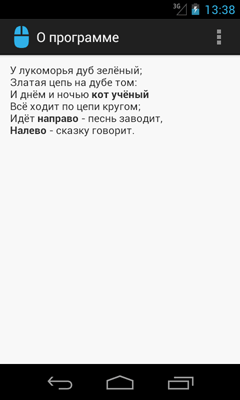
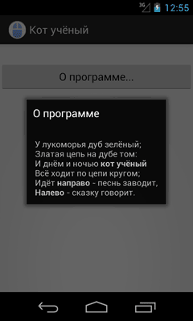
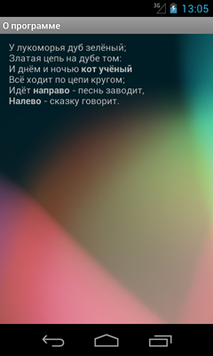
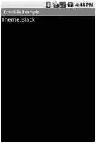
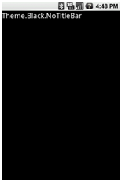
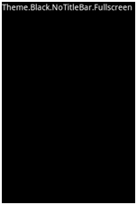
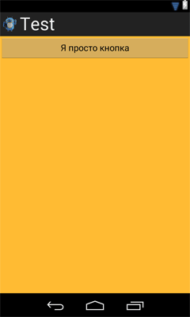
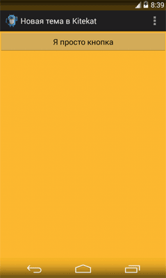

/* Моя кошка замечательно разбирается в программировании. Стоит мне объяснить проблему ей - и все становится ясно. */
John Robbins, Debugging Applications, Microsoft Press, 2000

/* Моя кошка замечательно разбирается в программировании. Стоит мне объяснить проблему ей - и все становится ясно. */
John Robbins, Debugging Applications, Microsoft Press, 2000
Стили
Наследование стилей
Тема
Примеры системных тем
Чтобы наше приложение было стильным, можно воспользоваться специальной темой. Тема - это коллеция стилей, которые обеспечивают профессиональный вид приложению, чтобы оно было похоже на родные приложения Android. Сама система Android уже имеет несколько предустановленных тем, которыми можно воспользоваться в своих целях. Вам достаточно только указать имя темы в манифесте.
В предыдушем примере мы учились переключаться на другой экран, чтобы увидеть новое окно О программе. Сделаем это окно диалоговым, чтобы оно не занимало весь экран.
Откройте снова файл манифеста AndroidManifest.xml из прошлого урока и измените строчку для активности About, указав тему.
<activity android:name=".About"
android:label="@string/about_title"
android:theme="@android:style/Theme.Dialog">
</activity>
Префикс @android: перед именем стиля означает, что мы используем встроенные стили системы. Запустив программу, вы увидите, что внешний вид окна «О программе» стал уже другим. Сравните.
 
Обратите внимание, что теперь появляется не окно во весь экран, а диалоговое окно в центре экрана. При этом остальная часть экрана затемняется.
Ради интереса, попробуйте другие стили:
android:theme="@android:style/Theme.Translucent" - диалоговое окно будет прозрачным, видны будут только буквы. Для нашего случая не очень подходит, так как плохо виден текст.
android:theme="@android:style/Theme.Wallpaper" - в этом случае в качестве фона для окна «О программе» используются обои главной страницы устройства. Смотрится красиво.

Кстати, вы можете разработать свою тему на основе существующих и сохранить ее в файле res/values/styles.xml.
Немного попрактиковашись, перейдем к теории.
Стили и темы — это такие же ресурсы, как и строки, изображения и т. д. Android обеспечивает некоторые заданные по умолчанию стили и темы, которые вы можете использовать в приложениях. При необходимости вы можете определить свой собственный стиль и тему для создаваемого приложения.
Стиль — это один или несколько сгруппированных атрибутов форматирования, которые отвечают за внешний вид и поведение элементов или окна. Стиль может задавать такие свойства, как ширину, отступы, цвет текста, размер шрифта, цвет фона и так далее. Сами стили хранятся в XML-файлах, отдельно от файлов разметки.
Подобное разделение напоминает использование каскадных стилей CSS для веб-документов, которые также отвечают за стили HTML-элементов и хранятся в отдельных файлах.
Предположим, у нас есть следующий код разметки для TextView:
<TextView
android:layout_width="fill_parent"
android:layout_height="wrap_content"
android:textColor="#00FF00"
android:typeface="monospace"
android:textSize="18sp"
android:text="@string/hello" />
Мы можем вынести все свойства в файл стилей следующим образом:
<?xml version="1.0" encoding="utf-8"?>
<resources>
<style name="CodeFont" parent="@style/Text">
<item name="android:textSize">18sp</item>
<item name="android:textColor">#00FF00</item>
<item name="android:typeface">monospace</item>
</style>
</resources>
Тогда в файле разметки теперь будет так:
<TextView
style="@style/CodeFont"
...
android:text="@string/hello" />
Как видите, мы удалили все свойства для текста из файла разметки и разместили их в файле стилей в ресурсе под именем CodeFont, который содержит теперь все необходимые свойства.
Создать файл со стилями несложно. Создаем новый XML-файл в папке res/values/ вашего проекта. Имя файла не имеет значения, главное, чтобы расширение было XML, а сам файл находился в указанной папке.
Корневым узлом файла должен быть элемент <resources>. Для каждого элемента, которому требуется стиль, нужно добавить элемент <style> с уникальным именем. Далее создаются элементы <item> для каждого свойства и присваиваются им имена, которые отвечают за выбранное свойство. Значением элемента <item> должно выступать ключевое слово, цвет в шестнадцатиричном значении, ссылка на другой тип ресурсов или другое значение в зависимости от свойства стиля. Ниже представлен образец такого стиля:
<?xml version="1.0" encoding="utf-8"?>
<resources>
<style name="CodeFont" parent="@android:style/TextAppearance.Medium">
<item name="android:layout_width">fill_parent</item>
<item name="android:layout_height">wrap_content</item>
<item name="android:textColor">#00FF00</item>
<item name="android:typeface">monospace</item>
</style>
</resources>
Во время компиляции все свойства из файла стилей будут извлечены и применены к элементам.
Атрибут parent для элемента style является необязательным и позволяет задавать идентификатор ресурса другого стиля, из которого нужно наследовать свойства. При этом вы можете переопределить свойства в случае необходимости.
Наследование - мощный и полезный механизм, позволяющий не изобретать велосипед, а использовать готовые проверенные наработки. С помощью атрибута parent в элементе style вы можете наследовать нужные свойства из существующих стилей, а также переопределить некоторые свойства или добавить свои дополнительные свойства. Предположим, мы решили наследоваться от существующего системного стиля Android для текстовых сообщений и слегка модифицировать его.
<style name="GreenText" parent="@android:style/TextAppearance">
<item name="android:textColor">#00FF00</item>
</style>
Если вы собираетесь наследоваться от собственных стилей, то использовать атрибут parent не нужно. Просто используйте префикс имени наследуемого стиля перед создаваемым новым стилем, разделяя имена стилей точкой. Например, для создания нового стиля, которые наследуется от стиля CodeFont, созданного нами ранее, где мы хотим получить красный текст, используйте следующий способ:
<style name="CodeFont.Red">
<item name="android:textColor">#FF0000</item>
</style>
Как видите, нам не пришлось использовать атрибут parent в теге style, потому что имя стиля начинается с имени CodeFont (созданный нами стиль). Теперь наш стиль наследует все свойства от стиля родителя, при этом мы изменили одно свойство android:textColor, чтобы текст выводился красным цветом. Вы можете ссылаться на новый стиль через конструкцию @style/CodeFont.Red.
Вы можете продолжать наследоваться дальше много раз, добавляя новые имена через точку. Допустим, мы хотим расширить свойство CodeFont.Red, чтобы текст выводился более крупным шрифтом:
<style name="CodeFont.Red.Big">
<item name="android:textSize">30sp</item>
</style>
Итак, мы наследовались от стилей CodeFont и CodeFont.Red, а затем добавили новое свойство android:textSize.
Не забывайте, что данная техника наследования применима только к собственным стилям. Для наследования системных стилей типа TextAppearance необходимо использовать атрибут parent.
Разобравшись с созданием стилей, рассмотрим различные свойства, определяемые в элементе item. Мы уже встречались с такими свойствами, как layout_width и textColor. На самом деле свойств гораздо больше.
Для поиска свойств, которые применимы к заданному View, можно обратиться к документации и просмотреть все поддерживаемые свойства. Так все атрибуты, перечисленные в таблице атрибутов класса TextView могут быть использованы для элементов TextView или EditText. Например, у данных элементов есть свойство android:inputType:
<EditText
android:inputType="number"
... />
Но вместо этого мы можем также создать стиль для элемента EditText, который будет включать в себя данное свойство:
<style name="Numbers">
<item name="android:inputType">number</item>
...
</style>
В файле разметки теперь можно написать так:
<EditText
style="@style/Numbers"
... />
На первый взгляд вам возможно покажется, что подобный подход отнимает слишком много времени. Но в больших проектах повторное использование стиля поможет вам сэкономить и время и силы.
Для просмотра всех существующих стилей вы можете посмотреть исходники Android. Найдите папку, в которую вы устанавливали Android SDK, там можно найти нужные исходники. Например, у меня путь к исходникам стилей Android API 17 выглядит следующим образом: D:\Android\android-sdk-windows\platforms\android-17\data\res\values\styles.xml. Помните, что все объекты View не поддерживает сразу все существующие атрибуты, поэтому используйте только специфичные стили для выбранного элемента. Но если вы по ошибке зададите ошибочный стиль для View, то это не вызовет краха приложения. Элемент View будет использовать только подходящие свойства и игнорировать чужие для него свойства.
Существует также часть свойств, которые не поддерживается ни одним элементом View и применима только как тема. Подобные стили действуют сразу на все окно, а не на отдельный элемент. Например, есть тема, скрывающая заголовок приложения, строку состояния или изменяющая фон окна. Подобные стили легко определить по слову window, с которого начинается название стиля: windowNoTitle, windowBackground.
Не забывайте использовать префикс android перед именем в каждом элементе item: <item name="android:inputType">.
Отдельно стоит отметить создание стиля для кнопки. У кнопки есть несколько состояний - обычное, в фокусе, нажатое, нажатое с фокусом. Поэтому для кнопки нужно создать четыре отдельных стиля, чтобы кнопка выглядело профессионально.
Есть два способа установки стиля.
Чтобы стиль работал в качестве темы, необходимо сделать запись в манифесте. Если вы добавите раннее созданный нами стиль CodeFont в манифесте для Activity, то все элементы View будут использовать свойства текста, которые мы разработали. Если в приложении будет элемент View, не поддерживающий свойства для текста, то свойство будет проигнорировано.
Чтобы прикрепить стиль к элементу View, достаточно установить стиль в файле разметки (что мы уже неоднократно делали):
<TextView
style="@style/CodeFont"
android:text="@string/hello" />
Теперь TextView будет стилизован в соответствии с нашими настройками в стиле под именем CodeFont. (мы не используем в данном случае префикс android: namespace).
Тема - это более ёмкое понятие. По существу, тема - стиль, который относится ко всему окну или приложению, а не к отдельному элементу приложения. Если стиль задан как тема, то все свойства начинают действовать сразу на всю коллекцию элементов. Например, если стиль CodeFont задать как тему, то тогда все элементы приложения TextView будут использовать моноширный шрифт зелёного цвета.
Темы похожи на определения стилей. Точно так же, как стили, темы объявляются в XML-файле элементами <style>, и ссылаются на них тем же самым способом. Различие состоит в том, что тема добавляется ко всему приложению или к отдельной активности через элементы <application> и <activity> в файле манифеста приложения, т. к. темы не могут быть применены к отдельным представлениям.
Чтобы стиль распознавался как тема, откройте файл AndroidManifest.xml и отредактируйте тег <application>, чтобы он включал в себя атрибут android:theme с указанием имени стиля:
<application android:theme="@style/CustomTheme">
Если вы хотите, чтобы тема относилась не ко всему приложению, а к отдельному Activity, то атрибут android:theme нужно добавить в тег <activity>.
Во многих случаях нет необходимости придумывать свои стили и темы, так как Android содержит множество собственных встроенных тем. Например, вы можете использовать тему Dialog, чтобы окно приложения выглядело как диалоговое окно (Смотри первый рисунок).
<activity android:theme="@android:style/Theme.Dialog">
Для прозрачного окна можно использовать тему Translucent:
<activity android:theme="@android:style/Theme.Translucent">
Если вам нравится тема, но несколько свойств всё-таки хотите подправить под себя, то просто добавьте тему как родительскую тему к своей теме. Например, мы хотим модифицировать стандартную тему Theme_Light, чтобы использовать свои цвета.
<color name="custom_theme_color">#b0b0ff</color>
<style name="CustomTheme" parent="android:Theme.Light">
<item name="android:windowBackground">@color/custom_theme_color</item>
<item name="android:colorBackground">@color/custom_theme_color</item>
</style>
Теперь мы можем использовать свой стиль вместо Theme.Light в манифесте:
<activity android:theme="@style/CustomTheme">
Каждая новая версия Android обзаводится несколькими новыми темами. И, возможно, вам захочется использовать новые темы в своих приложениях, чтобы пользователи новых аппаратов увидили современный интерфейс, при этом владельцы старых аппаратов будут видеть приложение в другом виде.
Предположим у вас есть собственная тема, использующая стандартную светлую тему, в файле res/values/styles.xml:
<style name="LightThemeSelector" parent="android:Theme.Light">
...
</style>
Чтобы задействовать также новую голографическую тему, доступную в Android 3.0 (API Level 11) и выше, создайте альтернативный файл стилей в папке res/values-v11, где будет указана новая тема:
<style name="LightThemeSelector" parent="android:Theme.Holo.Light">
...
</style>
Теперь программа автоматически будет переключаться между стилями, самостоятельно определяя версию Android.
Список стандартных атрибутов, используемых в темах, можно найти на странице .
Вы можете создавать собственные стили, а можете подключать готовые системные стили или отдельные атрибуты стилей, используемых в Android. Для указания стиля, предопределённого в Android, используется следующий синтаксис:
style="@android:style/TextAppearance
Если вам нужно выбрать только отдельную часть стиля, то используйте знак вопроса:
<EditText
id="@+id/edit"
android:textColor:="?android:textColorSecondary" />
Знак ? применяется для поиска значения стиля в текущей теме, а подстрока ?android означает поиск значения стиля в системной теме Android.
| Theme Theme.Black Theme.Light Theme.Translucent |
Theme.NoTitleBar Theme.Black.NoTitleBar Theme.Light.NoTitleBar Theme.Translucent.NoTitleBar |
Theme.NoTitleBar.FullScreen Theme.Black.NoTitleBar.FullScreen Theme.Light.NoTitleBar.FullScreen Theme.Translucent.NoTitleBar.FullScreen |
|  |  |  |
| Status bar: Выводится Title bar: Выводится |
Status bar: Выводится Title bar: Не выводится |
Status bar: Не выводится Title bar: Не выводится |
В последней версии плагина для Eclipse можно выбрать системную тему сразу из среды разработки. Откройте файл разметки в графическом режиме. Чуть выше формы имеется выпадающий список тем. По умолчанию там установлена тема Holo. Поиграйтесь со списком, чтобы просмотреть другие варианты.
В Android 4.4 появилась возможность сделать панель навигации и строку состояния полупрозрачными. Откройте файл styles.xml и добавьте строчки:
<!-- Application theme. -->
<style name="AppTheme" parent="AppBaseTheme">
<!-- All customizations that are NOT specific to a particular API-level can go here. -->
<item name="android:windowTranslucentStatus">true</item>
<item name="android:windowTranslucentNavigation">true</item>
<item name="android:fitsSystemWindows">true</item>
<!-- <item name="android:actionBarStyle">@style/ActionBar.Solid.GreenStyle</item> -->
</style>
<style name="ActionBar.Solid.GreenStyle" parent="@android:style/Widget.Holo.Light.ActionBar.Solid">
<item name="android:background">@android:color/holo_green_dark</item>
</style>
Последний пункт у тебя закомментирован. Он позволяет настроить тему для ActionBar. Можете поиграться с ним. Для сравнения ниже представлены скриншоты стандартного окна активности с чёрными полосками снизу и сверху и стилизованной активности. Для наглядности я выбрал оранжевый цвет для фона активности.
 
Собственная анимация для диалоговых окон
Анимация активностей при помощи тем и стилей
Holo Everywhere | Android Developers Blog